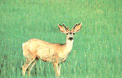
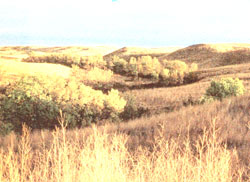
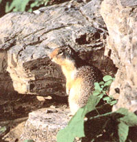
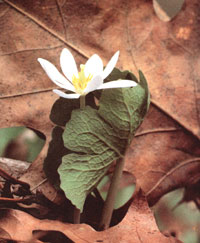
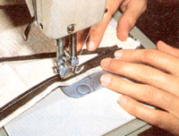
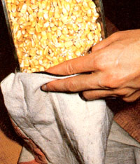
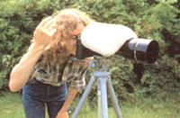
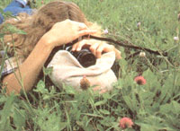

If you're a shutterbug on a budget, here's a camera support you can make in just munites.
Photos By The Author
The lowly beanbag hasn't a leg to stand on, but that doesn't keep it from being a superb photographic "tripod." It's sturdier, lighter, simpler to use, and more versatile than most three-legged support systems, and if you make it yourself, it costs next to nothing.
Professional photographers have long known that one of the reasons their photos are consistently superior to the snapshots taken by amateurs is the pros' use of solid camera-mounting systems; too many novice shutterbugs are willing to risk the clarity of their images to shaky hands and wobbly knees.
But by simply filling a home-sewn cloth sack with dried grain, even the lowest-budgeted photographer can "support" his or her camera habit in style. A beanbag can be poked, pounded, and fluffed to form a comfortable rest for just about any camera-and-lens combination you can come up with, and will anchor that equipment to odd shapes and inclines seemingly steep enough to defy gravity.
I was introduced to the beanbag tripod several years ago by a professional photographer friend. He called it a bean pod, and he'd been using it for years to capture roadside wildlife on film.
Over the past few years I've fabricated and used several varieties of bean pods (which can be filled with dried corn, beans or peas, rice, small pebbles, or even those dumb plastic foam "peanuts" used as packing insulation), and I've found them useful for far more than mobile wildlife photography:
By placing a beanbag on the ground, you can get an ant's-eye view of wildflowers, mice, mushrooms, insects, and other terrain-hugging forms of life. This down-to-earth perspective adds an interesting new dimension to any slide show or photo album-and dollars to your income if you're a pro.
For shooting landscapes-when it's necessary to sacrifice shutter speed in favor of increased depth of field-haul out a beanbag, plop it firmly down on top of a fence post, stump, or rock, seat your camera securely in the bag, and squeeze of dead-sharp shots with shutter speeds as slow as two or three seconds. Because this homemade photo accessory supports so much of the bottom surface of a camera and lens (rather than balancing all the weight at a single point as a tripod screw does), it's often actually sturdier than a traditional three-legged stand. Wind, a slight tremor of the shutter release finger, and even the movement of the camera's own mirror can blur a slow shot taken atop a tripod. That seldom happens on a beanbag.
The trick is to snuggle your camera securely into the lump of beans (or whatever you're using in their place), then press down firmly so that the instrument is comfortably seated in its rest. Once you master the system (which takes the average photographer all of two minutes), you'll discover that it's possible to make successful slow-shutter shots without employing a cable release.
Big telephoto lenses-300mm and longer-are particularly susceptible to motion blur, since they magnify movement as much as they do an image. Even so, I've photographed owls at dusk using a 600mm lens and a shutter speed of 1/8 of a second . . . and the results were sharp enough for a wildlife magazine to print. Of course, that magnum-caliber lens was held in the steadying embrace of sacked corn.
Occasionally you'll need to anchor your camera someplace where there are no horizontal (or even semihorizontal) supports. With a beanbag, you can create a support by holding the pouch against a wall, tree, or whatever surface is handy, then resting your camera on the bag. That leaves one hand free to manipulate the instrument. Of course, this particular variation of the beanbag system can't be called steady as a rock, but if you take a deep breath, exhale half of it, relax, and squeeze the shutter, you should be able to make top-quality exposures at shutter speeds down to 1/15 of a second or so.
Beanbags, in addition to substituting for tripods, can also be used in conjunction with them. Beanbag-wise professionals sometimes lay bean sacks on top of cameras that are mounted on sturdy tripods. That extra mass of weight atop the camera absorbs the minuscule flicker of shutter-induced movement, allowing for absolute steadiness when professional-quality results area must.
If you've got the coordination necessary to use a camera, you can certainly handle making a beanbag tripod.
The fabric you use for the sack should be nonabrasive, tightly woven, and tough enough to withstand hard knocks and rugged use without ripping. Denim is perfect; a section of old jeans leg is ideal . . . and is half-finished before you even touch it. Just cut a piece of leg to the length you want your bean pod to be, sew one end shut, fill the resulting pouch loosely with the "beans" of your choice, and sew the top shut. (For added strength, the seams should be double- or even triple-stitched.)
Naturally, the dimensions-and to some extent, shape-of your beanbag will be determined by the photo equipment you'll use with it: A tiny rangefinder camera will rest comfortably on a 3" X 6" pant's pocket filled to a thickness of less than an inch; a massive 500mm lens attached to a motorized 35mm SLR (single lens reflex) camera body might require a large bag as much as 6 inches thick. If you'll be resting your makeshift tripod over the windowsill of your car or truck, as my friend the wildlife photographer does, give it some floppy "legs" to hang down either side of the door. And when maximum stability is your goal, think big.
For added versatility, you can make an "inflatable" beanbag by sewing a zipper into one end of the sack. (Plastic zippers are less durable than metal ones, but they're also less likely to mar expensive and delicate photo equipment.) To assure that you don't lose your beans at an inopportune moment, make several extra passes over the ends and corners of the zipper with strong thread.
This closeable opening will let you pack a virtually weightless and bulkless wad of cloth deep into the woods or to the top of a mountain-where you can fatten the slack sack with wild nuts, stream gravel, sand, dirt, or whatever natural materials are at hand-and have an instant tripod for that "I've been there and I can prove it with pictures" photo session.
If you carry your zippered sack into the woods prestuffed with nuts, seeds, popcorn, gorp, jelly beans, or anything else edible, you can lunch on your beanbag to help fuel the return hike.
No matter which of its many variations you decide to try, I'm sure you'll find the incredible (and even edible) beanbag to be the handiest most versatile tripod money can't buy.
For a lightweight, bulkless, "inflatable' beanbag tripod that can be carried empty into the field and filled with whatever natural materials are at hand, sew a zipper into one end of the sack.
|
 No matter which of its many variations you decide to try, I'm sure you'll find the incredible (and even edible) beanbag to be the handiest, most versatile tripod money can't buy. |
 Dried corn makes superb filler. For an incredible, edible beanbag, fill the sack with nuts, popcorn, or trail mix; when the photo session is done, you can eat your tripod. |
 Mount your camera on a standard tripod and drape a beanbag over the top-you'll achieve total stability for absolute image clarity with very slow shutter speeds. |
|
 Use a beanbag as a ground-level camera platform for a bug's-eye view of nature. |
 |
 |
|
 |
 |
|